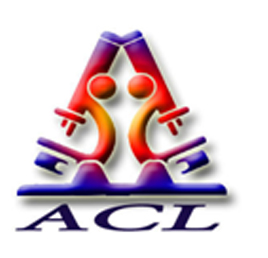
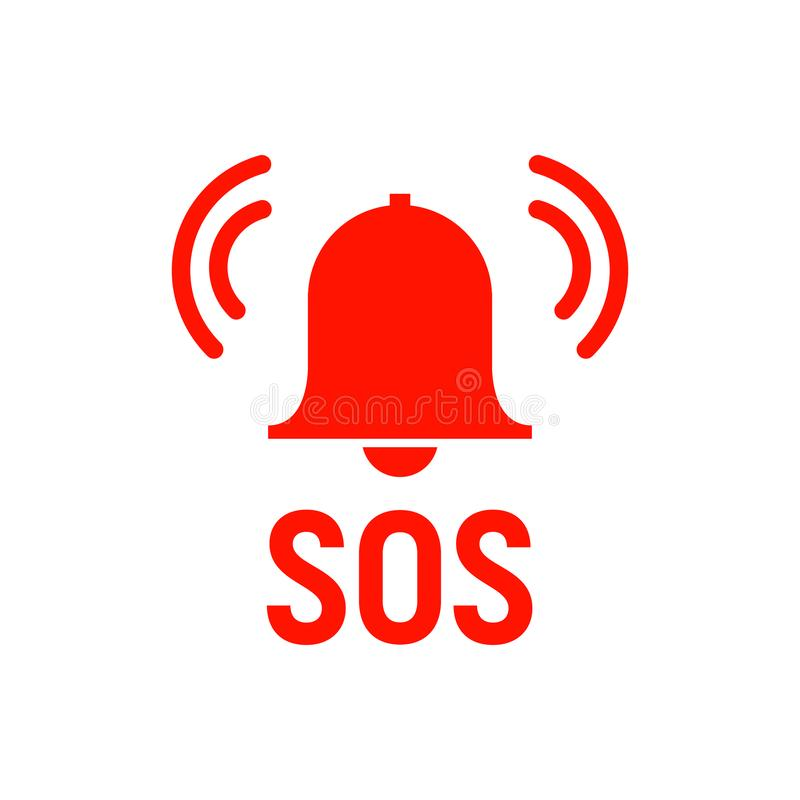

This Application is created to enhance the user convinience and satisfaction with the Services of Arun Clinical Laboratories.This Application ensures the connectivity between the Hospital management, Doctors and the users with the help of following feature: 
The user can enable the option of widget on his/her phone’s lock screen, where incase of emergency situations he/she can click this option, and then the request will be sent along with the SOS Call to the nearest ACL along with all their medical reports stored in ACL app.The respective ACL will detect their location and take action as soon as possible.
